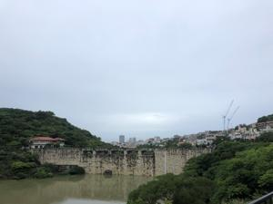
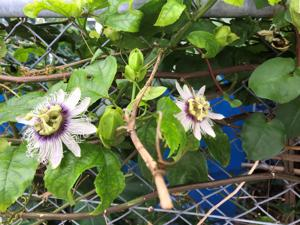
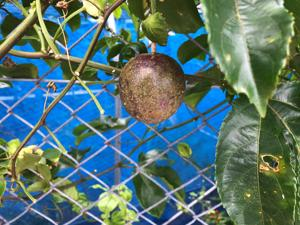
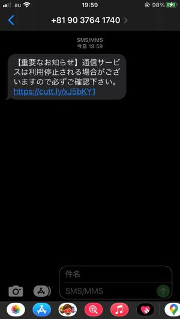

うるがいの話 ある日
最新: ピアノ【うるがいの話 ある日】とは 一日だけのプログです
『うるがいの話』の最新一日だけのプログで、通信料が少なく経済的だ。カニの画像をクリックすると全ての日付が載る『うるがいの話』サイトを表示します
|
|
【うるがいの話】 うるがい(ｳﾙｶﾞｲ urugai)とは、『もずくがに』の名前でとても大きくなります。 |
|---|---|
|
|
【カミマヤーの話】 猫のことを方言でマヤーといいます。カミマヤー（kamimayaa）とは、神の猫のことです。 |
|
【たながぁの音楽】 たながぁ（ﾀﾅｶﾞｰ tanagaa）とは手長えびのことで、何種類かあり大きいのは車 エビぐらいになります。 |

|
【ぶながぁの話】 ぶながぁ(ﾌﾞﾅｶﾞｰ bunagaa)とは、赤い髪の毛、赤い身体、そして身長は１ｍ２０ｃｍ ぐらい、川の蟹を食べているの目撃された。場所は沖縄県国頭郡大宜味村のと ある村僕の隣近所に住んでいる爺さんから、聞いた話です。 |
|
|
【ギーマの話】 ギーマ(giima)とは、山原の里山に咲くスズランに似た、 花を付けます。実は食べられます、 気が付くと口の周りが紫になっています。 |
2022年06月17日 (金）ピアノ
16:23
   
あなたがピアノを続けるべき11の理由【音楽書】（土屋賢二 哲学者）引用
苦労したのは、技術的なことだけではありません。僕の場合、妻とも闘わなく
てはなりませんでした。練習すると「うるさい」と文句を言われるのです。ヘ
ッドフォンをつけて電子ピアノで練習しても、今度は「カタカタうるさい」と
怒られる。そもそもピアノを購入するのも一苦労でした。「置くスペースがな
い」と反対されたので「じゃあこの本箱を処分する。ここに置けば壁のシミが
隠れるし、部屋が重厚になる」と説得しました。妻が「でもうるさい」と言う
ので、「弾かないから」などと約束して、やっとの思いで買わせてもらったの
です。
近所のオッサンが、真夜中でもピアノを弾くので迷惑である。電子ピアノにし
たらいいのに。子供達がまだいたとき、私の部屋が応接間でキーボードでカタ
カタとタイピングしていたら、うるさい！とヨメによく怒られた。
１６時１７分 ビットコインの総資産 ￥８、１２０↓